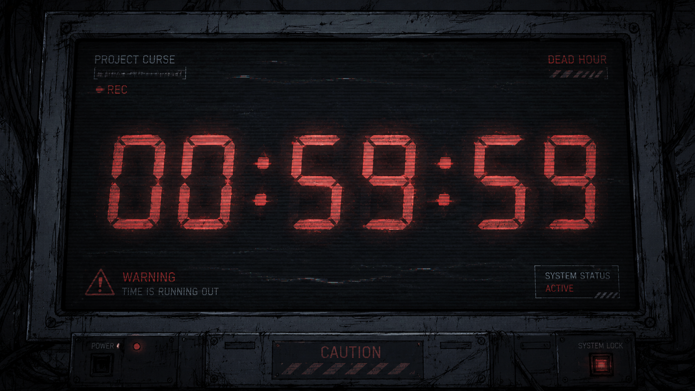
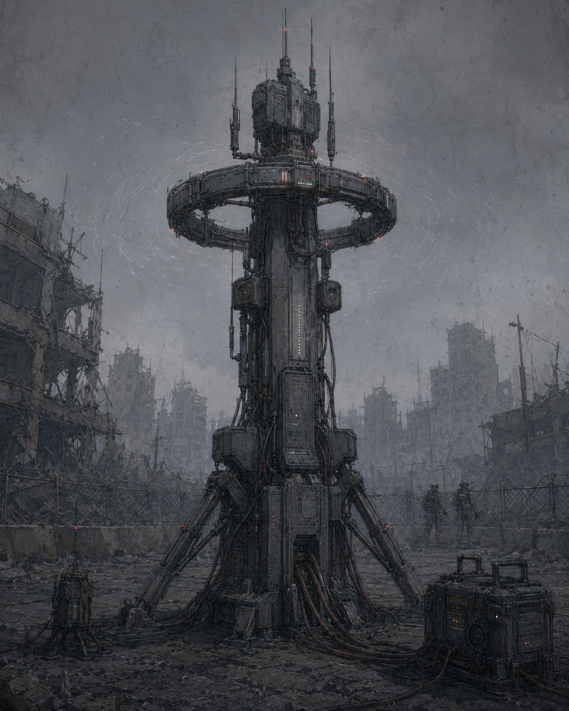
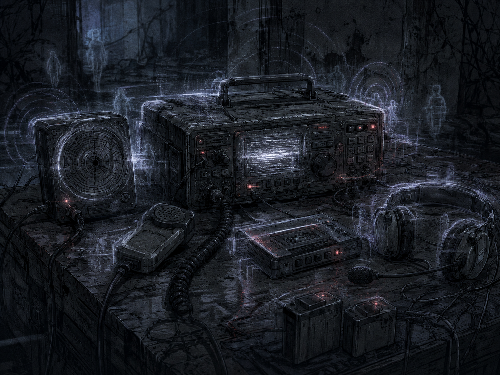
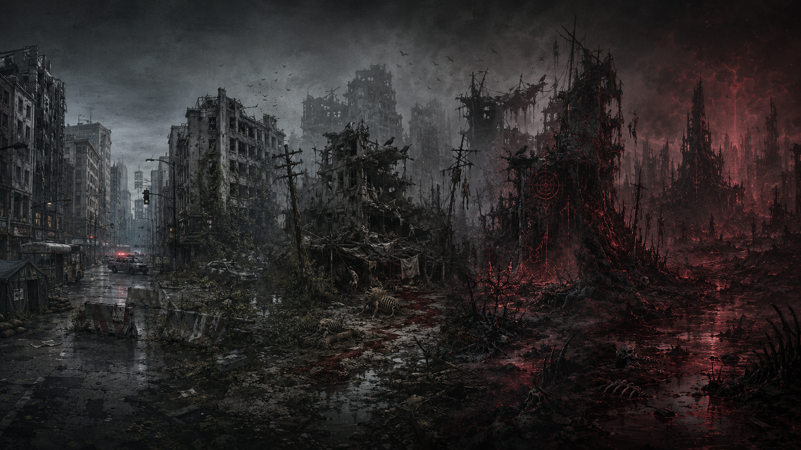

Redzone_881120
| ARCHIVE CODE | Redzone_881120 |
| INTERNAL INDEX | PC-RZC-014 |
| ACCESS LEVEL | RESTRICTED / LOCAL STATIC EXPORT |
| CLASSIFICATION | ENTITY / CONTAMINATION |
| ORIGIN TITLE | 레드존 이상현상 및 오염 기준 문서 |
| ATTACHMENTS | 6 |
Red Zone Anomaly & Contamination System
◆ 분류: 레드존 이상현상, 오염 지수, 시간 오염, 문 현상, 통신 오염
▣ 중심 기관: U.A.C / N.H.C / S.I.D / F.H.C
⟐ 기능: 레드존에서 발생하는 비정상 현상과 오염 기준을 한 문서 안에서 판정한다.
이 문서는 레드존을 단순한 전투 구역이 아니라 시간, 공간, 통신, 사체, 장비가 동시에 오염되는 재난 구역으로 다룬다. U.A.C는 이 기준을 통해 구역 격상, N.H.C 투입, S.I.D 조사, F.H.C 샘플 회수, A.R.F 회수 제한을 결정한다.
CI 등급 시스템

CI는 Contamination Index의 약자로, 저주, 생체 변이, 시간 왜곡, 신호 오염, 장비 오염을 함께 보는 복합 오염 지수다. 숫자만 보는 체계가 아니라 현장에서 무엇을 회수하고, 무엇을 버리고, 어디를 봉쇄할지 결정하는 기준이다.
◆ CI-H: Human 기준. 인간, 귀환 민간인, 실종자, 감염 의심자의 오염도를 판정한다.
◆ CI-Z: Zone 기준. Green Zone, Yellow Zone, Red Zone, White Zone, Black Zone의 격상 여부를 판단한다.
◆ CI-E: Entity 기준. Feral, 타락체, Mimic Type, Superior Type, Automaton 계열의 위험도를 판정한다.
◆ CI-O: Object 기준. Cursed Gear, 무전기, 헬멧캠, 차량 부품, 혈흔 장비의 오염도를 판정한다.
◆ CI-S: Signal 기준. Ghost Channel, 무전 로그, CCTV, 음성 기록의 신호 오염도를 판정한다.
CI 등급
- CI-0: 정상 상태. 오염 반응 없음.
- CI-1: 미약한 잔류 오염. 관찰 대상.
- CI-2: 초기 오염. 현장 기록과 제한 검사가 필요함.
- CI-3: 격리 필요. C.P.D 민간인 이동 제한 또는 S.I.D 조사 대상.
- CI-4: Red Zone 대응 기준. N.H.C 투입 검토.
- CI-5: 일반 회수 제한. A.R.F 단독 회수 금지.
- CI-6: Black Tag 또는 특수 봉쇄 검토.
- CI-7: Black Zone 전환 가능성. 구조보다 봉쇄 우선.
Dead Hour / 죽은 시간

Dead Hour는 레드존 내부에서 시간이 정상적으로 흐르지 않는 현상이다. 무전은 과거의 작전을 반복하고, 사망자의 위치 신호가 다시 켜지며, 아직 발견되지 않은 시체가 이미 기록 안에 나타난다.
◆ Delay Phase: 소리, 무전, 움직임이 늦게 따라오는 단계.
◆ Loop Phase: 같은 길, 같은 음성, 같은 장면이 반복되는 단계.
◆ Overlap Phase: 과거 작전과 현재 작전이 같은 장소에 겹치는 단계.
◆ Null Phase: 시간 기준이 사라져 위치, 생체 신호, 영상 기록이 맞지 않는 단계.
- 사망자의 무전에 응답하지 않는다.
- 같은 복도와 골목이 반복되면 전진하지 않는다.
- 헬멧캠 기록과 실제 위치가 다르면 작전을 중단한다.
- C.A.P-17 기준 신호가 사라지면 구조보다 철수가 우선된다.
C.A.P-17 Chrono Anchor Pylon

C.A.P-17은 Dead Hour 구역에서 작전 기준 시간을 고정하기 위한 시간 안정화 장비다. 괴이를 공격하는 장비가 아니라, 대원이 현실 기준을 잃지 않게 붙잡아두는 장비다.
◆ Standby Mode: 주변 CI-S와 CI-Z를 관찰하는 대기 모드.
◆ Anchor Mode: 작전 기준 시간을 고정하는 기본 모드.
◆ Lockdown Mode: 시간 오염 급상승 시 구역을 제한 봉쇄하는 모드.
◆ Gate Suppression Mode: Blood Gate 주변 시간 흔들림을 완화하는 모드.
◆ Emergency Burn Mode: 장비가 오염되었을 때 내부 기록과 회로를 태워 폐기하는 모드.
보조 장비
- Anchor Relay Node: C.A.P-17 신호를 확장하는 중계 장치.
- Chrono Marker Flare: 시간 오염 구역에서 철수 방향을 표시하는 표식탄.
- Field Sync Tablet: 대원 위치와 기준 시간을 동기화하는 휴대 장비.
- Ghost Channel Jammer: 오염된 무전 신호를 차단하는 장비.
Blood Gate 종류
Blood Gate는 우시노다교 의식, 대량 사망, 고농도 오염, 시간 붕괴가 겹칠 때 발생하는 문 형태의 이상현상이다. 문이 닫힌 뒤에도 Gate Residue가 남아 구역을 계속 변질시킨다.
◆ Small Gate: 짧은 시간 열리는 소규모 문. 실종자나 소형 Feral 출현과 연결된다.
◆ Ritual Gate: 우시노다교 의식으로 생성되는 문. Red Hand 개입 가능성이 높다.
◆ Dead Gate: 사망자의 목소리, 모습, 마지막 위치가 반복되는 문.
◆ False Gate: 통과자를 원점으로 되돌리거나 Mimic에게 유도하는 함정형 문.
◆ Red Pillar Gate: 붉은 빛기둥과 함께 열리는 대규모 문. 구역 격상 위험이 높다.
◆ Reverse Gate: 외부의 사람과 공간을 문 안쪽으로 끌어들이는 유형.
◆ Gate Residue: 문이 닫힌 뒤 남은 검은 혈흔, 붉은 균열, 사체 위치 이상.
Ghost Channel / 시간 오염 통신

Ghost Channel은 무전, CCTV, 헬멧캠, 전화, 방송 장비를 통해 과거의 음성, 사망자 교신, 미믹 신호가 섞여 들어오는 통신 오염 현상이다.
◆ Static: 짧은 잡음과 끊어진 음절만 들리는 단계.
◆ Echo: 과거 작전 교신이 반복되는 단계.
◆ Dead Voice: 사망자의 목소리가 현재 채널에서 들리는 단계.
◆ Mimic: 살아 있는 사람을 흉내 내는 구조 요청이 발생하는 단계.
◆ Total Contamination: 무전망 전체가 오염되어 지휘 명령을 신뢰할 수 없는 단계.
레드존 장기 방치 단계

레드존은 시간이 지나면 자연적으로 안정되지 않는다. 봉쇄, 회수, 소각, 제독이 늦어지면 오염은 지형, 건물, 장비, 사체, 통신망에 스며들고 결국 구역 자체가 괴이화된다.
- Residual Zone: 사건 직후 잔류 오염 단계. A.R.F 회수 가능성이 남아 있다.
- Silent Zone: 통신과 생체 반응이 줄어드는 단계. C.P.D 민간인 진입 금지.
- Distortion Zone: 지도와 실제 구조가 맞지 않는 단계. N.H.C 단독 진입 제한.
- Dead Hour Zone: 시간 오염이 고정되는 단계. C.A.P-17 설치 우선.
- Gate-Bloom Zone: Gate Residue가 구역 곳곳에 퍼지는 단계.
- Feral Nest Zone: Feral이 구역을 둥지처럼 사용하는 단계. 소각 작전 검토.
- Black Conversion Zone: 구조보다 완전 봉쇄가 우선되는 최종 단계.